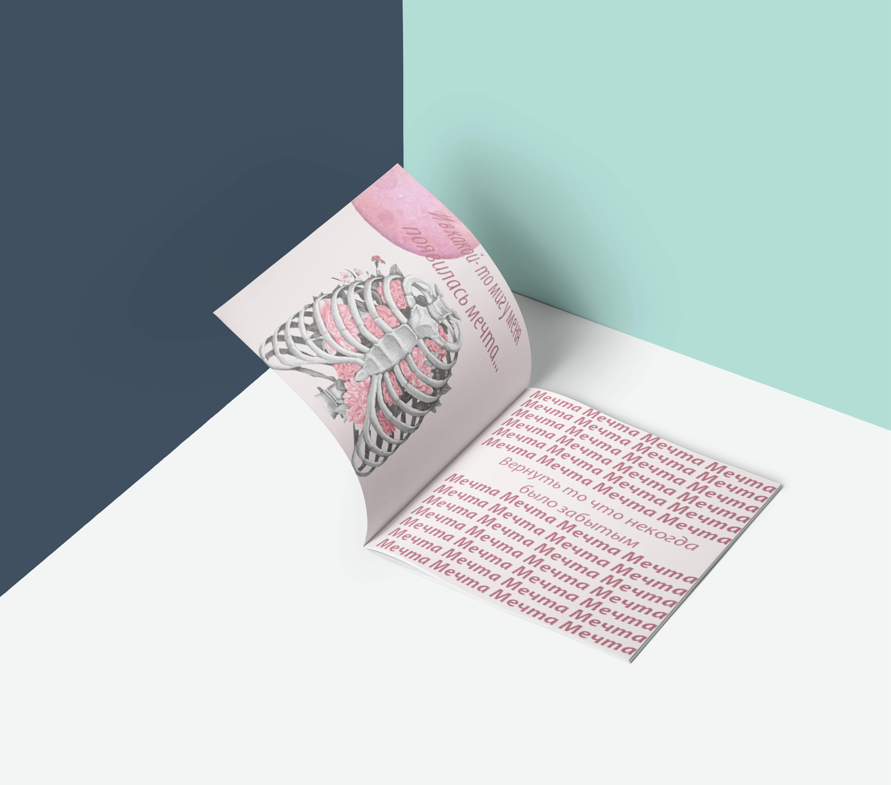

Зин “на встречу будущему”
Зин посвящённый будущему в котором, писателей заменяют роботы. Размышление на тему может ли искусственный интеллект заменить человека.
В зине поднимается серьёзная тема, того, как прогресс уничтожает культурную составляющую общества. Книги уже не воспринимаются, как элемент искусства. Теперь написание литературы задача машин, из книг медленно исчезает жизнь.